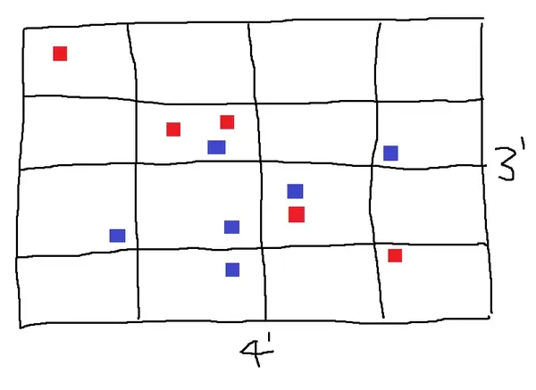

Updates from DA
Okay lets jump back into that old format. I'll mostly be talking about wargaming in this post as thats what has been consuming my time. We'll cover Bolt Action, Frostgrave and a newish game called Hobgoblin. But don't fret, there will be some RPG talk, first up...
RPG Theory
So I've recently moved my group from a Shadowdark game to Dolmenwood; I had been waiting for physical products for Dolemnwood before diving in, but I got the exciting news that we're expecting our second child in April so that timeline doesn't work out. I also found that Shadowdark lacked enough meat on the bone which added to the burden of actually running it.
Mechanically the game was fine, it had all the rules and more that I'd want to be able to adjudicate situations that came up in play. But is that enough to make a game complete?
I'll likely revisit this topic of completeness, but I am of the opinion that an RPG isn't complete unless it has rules for GM prep. Now of course I can just grab this from another RPG or product, but why should I have to? I don't want to bash on Shadowdark, because its a really fun game, beautifully made and a lot of effort went into it - it has a great community and it can definitely run a good game; but as an example, there are no rules for creating a dungeon - which is the quintessential adventure type and certainly the focus of the game. And sure I've got enough experience with similar games to be able to draw a map, place some monsters, traps, and treasures, create a wandering encounter table. But is that how Shadowdark is meant to be played, am I creating appropriate challenges and placing enough treasure? The characters and XP advancement are very different to BX which my ideas would be coming from, so I think not.
What do you think about RPG completeness, do you need rules to create scenarios for the game to be complete? What else does it need beyond resolution mechanics and character creation, a setting? I'd love to hear what you think - details for contacting me are down below.
A Review
HOBGOBLIN!
I've been listening to some wargaming podcasts as I go about hobbying, and I've been getting inundated with game recommendations (which isn't great for the wallet). One such game that peaked my interested is HOBGOBLIN from Mike Hutchinson (the creator of Gaslands, another game I want to pick up at some point - probably in my next order from Osprey). This game was recently kickstarted and according to their website everything is just being shipped now, so I imagine it might be a little bit difficult to get your hands on this side of Christmas; however, there is a free quickstart available (which annoyingly you have to go through their checkout process rather than it just being a download to get). If the following short review sounds interesting then you can check it out here: Planet Smasher Games
“HOBGOBLIN is a game of brutal old school fantasy battles for people who want to put all their miniatures out on the table in sweeping battlelines and see them die in glorious battle without needing to set aside a whole day to play.”
Certainly an interesting premise for those of us who are time poor, lets take a look.
Army Creation
HOBGOBLIN is miniature agnostic, so to build your army you creat units of different Footprints; either Wide, Narrow or Horde which determines what base size a unit will have. And Unit Types; a list of generic types like Light Infantry, Chariot, or Monster these determine what statistics the unit will have and are limited by different footprints. Unit types also provide Keywords like Tough; which acts like extra hitpoints. Finally you can pay to add extra keywords.
Playing the Game
The way the game is played should be fairly familiar to anyone with some experience in wargames. You run through the phases with one player acting first in each. Because this game markets itself as fast and brutal, lets take a closer look at what makes iot that way.
Firstly, combat seems deadly - in melee you roll 10d6 looking for target numbers in the 2-6 range; this is determined by the attacking unit type vs defending unit type, for example a Light Infantry requires 5+ to hit Heavy Infantry. With a target of 6+ being pretty rare, you should be dealing a good chunk of damage. For ranged combat you only throw 5d6 and you cant score additional hits once a target has 5 hits, (10 hits effectively kills the unit); so you MUST get into melee to kill a unit.
The second mechanic which encourages this is Doom and the Doom Phase. Each hit adds 1 Doom to a unit and once a unit has 10 Doom, it becomes Broken. Then during the Doom phase (the final phase of a turn), each friendly unit within 8'' of a Broken unit gains 1 Doom, which can cause them to become Broken and chain this effect. Then all Broken units are removed - you can imagine some devastating turns where multiple units end up running because of a single unit becoming Broken. All is not lost though, you gain some meta currency (not explained in the quickstart) one units are removed.
Lastly, is the table setup. The minimum table size is fairly small in comparison to standard games at 4'x3', and then the no mans land is only 16'' wide (in my experience at least 24'' is typical) considering the movement rates of the units with most being above 8, you can expect to be stuck in on the first if not the second turn. The stated goal of the designer was to skip the step of most wargames of setting up your position for the first turn or two. I'm not sure if this really achieves that, theres every chance that you don't end up in combat until turn 2. I wonder if they could have been more bold here and had some sort of random deployment like scattering dice across the board (a picture example to follow) and deploying units where the dice fell; this way some units might already be in combat!

The Quest
I'm going to divide this into two sections from now on, Hobby updates and Gaming updates.
Hobby Updates
I recently went to an awesome and very fun Bolt Action event. It was centered around beginners and as my third time ever playing I found it was a great introduction, lots of support from the event organisers and my opponents. I'll likely talk about Bolt Action more in future posts as I get ready for another event in March focusing on the Early War period.
Luckily the force I built for this event was already based on a typical force organisation for early war, so not much will need to change but it is at a higher point count, so I'll be able to add some more fun toys. This post is already running long, so I'll make a seperate post to talk more about the force I took and the one I plan to take in March but I'll leave you with a picture of the force.

Next up on the painting block is a set of miniatures from North Star Miniatures for some Frosgrave, I'm looking to build two generic forces so that I can play with people without having to get them to invest, they are also some nice generic fantasy miniatures so they'll get use in some other games. I'll need to look at building a small set of terrain to play as well, check back in after Christmas for updates.
Gaming Updates
What have I been playing? Well, I'm still in two Play by Post games, one is Traveller and another BX in Barrowmaze. Traveller has been fun, and its my first time playing - we're battling a faulty ship which has given as a (un)healthy amount of radiation poisioning on our way to an old pirates vault. In barrowmaze we've been teleported deep into the dungeon, surrounded by undead cultists and very much lost - I'm beggining to fear we might never emerge.
Interestingly I'm able to get these short bursts of deep immersion in dungeon crawling via PbP, I'm feeling deep dread and anxiety when I'm writing my posts trying to find a way out, and I definitely feel lost and helpless - It's pretty awesome. I don't know if I've had that experience as strongly at the table. In another PbP I had played a long while ago, I had got split from the party and had lost my light, trying to navigate dark corridors back to where I thought the party would be - whilst I heard strange sounds in the dark was again deeply immersive, I felt genuine fear as my character when the corridor opened up into a vast chamber.
I've also been playing in a “west marches” Mork Borg game, its a published setting with a set goal and we're nearing the 'end' which will likely wrap up before the end of the year. I'm not sold on Mork Borg or the setting for mid-length play, but this is a pretty narrow experience. Its been pretty fun, and definitely gone past grim-dark and horrible into humuorous.
Lastly, I'm three sessions into Dolmenwood with my regular group, so far no experience has been earned, but they're right out the front of Winters Daughter so hopefully we get some progress in the next session. Having said that, Dolmenwood is a really amazing product, I've really enjoyed the system as a sort of BX+. Theres lots of nice quality of life changes, new setting specific mechanics and systems, and a tonne of setting content - just going on page count I think there a 200 keyed hexes each with a page, so you need to do some prep - but theres heaps to draw inspiration from. Once the characters see some action I'll likely write up some session reports to share. Theres been lots of careful play and exploration and we only play ~2hour sessions, so I think the pacing is good despite the lack of concrete/measurable progress - and I've certainly been having fun running it.
Content Shoutouts
Okay, to wrap this post up this is what I've been listening/watching/reading this week:
- The Tabletop Miniature Hobby Podcast, this is where I found out about HOBGOBLIN, but I've been listening to the odd episode whilst I've been painting minis - some light hearted and interesting discussions on hobby wargaming.
- Halberds and Helmets, one of the first podcasts I started listening to, it had been a year between episode but Alex has put out two new episodes talking about his homebrew system of the same name. Alex also has a bunch of great OSR resources at https://campaignwiki.org/
- Coldlight Press, not exactly 'content' but the 2 iteration of the Adventure Site Contest is closing soon (January 1st), if writing a short adventure site and having it critiqued sounds interesting check it out. I'm working on something, whether I'll find the time or the courage to submit is yet to be seen.
Conclusion
Thats it folks, thank you so much for reading. I haven't sorted out a comments system, but if you have feedback send me an email at diegeticadvancement@gmail.com or send me a voice message on Speakpipe. I'm also on Discord in a few places, so if you find me feel free to send me a message there.
Bye for now!